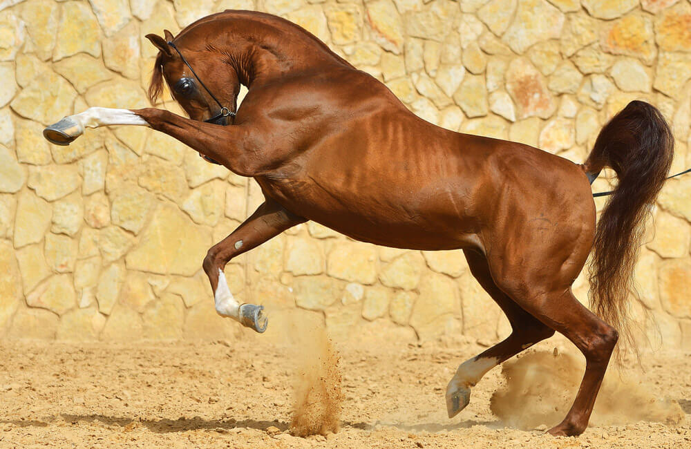

 Arapski konj rasa je konja koja potiče sa Arabijskog poluostrva. Sa karakterističnim oblikom glave i visoko postavljenim repom, arapski konj je jedna od najprepoznatljivijih pasmina konja na svetu. Takođe je jedna od najstarijih rasa, sa arheološkim dokazima o konjima na Bliskom Istoku koji podsećaju na moderne arapske konje od pre 4.500 godina. Kroz istoriju, arapski konji su se raširili po svetu putem rata i trgovine, korišteni su za poboljšanje drugih rasa dodavanjem brzine, profinjenosti, izdržljivosti i jakih kostiju. Danas se arapske krvne loze nalaze u gotovo svakoj modernoj rasi konja za jahanje.